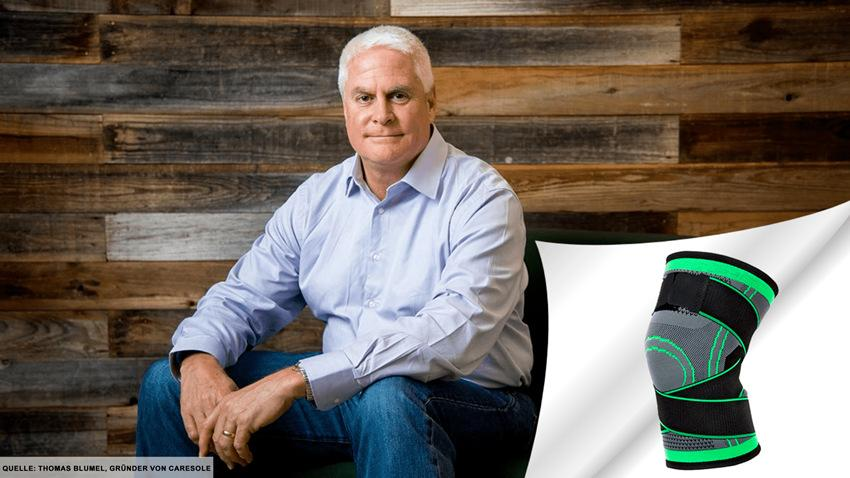

Accueil > Actuel et tendance > Soins des genoux
Pourquoi les grandes marques sont-elles FURIEUSES contre ces genouillères de compression révolutionnaires ?
By Laura Simons · January 20, 2021

Compte tenu du fait que plus de 100 millions de personnes souffrent annuellement de douleurs chroniques aux genoux et que le coût des traitements ne cesse d'augmenter, ces genouillères de compression révolutionnaires ne pourraient pas arriver à un moment plus opportun.
Des honoraires hors de prix lors de consultations médicales, des médicaments nocifs et des interventions chirurgicales invasives et risquées ne sont que quelques-unes des raisons pour lesquelles les personnes souffrant de douleurs aux genoux sont mécontentes. Vous dépensez des sommes toujours plus importantes chaque fois pour ensuite vous retrouver déçu et sans le sou.
Au bout du compte... c'est un énorme gaspillage d'argent.
En vérité, les personnes qui souffrent de douleurs aux genoux recherchent des solutions plus économiques pour soulager leurs douleurs sans se ruiner.
Heureusement, Circa Knee™ peut vous aider à apaiser votre douleur.
Caresole®, une start-up américaine, a développé une technologie innovante et brevetée pour la genouillère de compression appelée Circa Knee™, laquelle révolutionne totalement la vie quotidienne de personnes atteintes de douleurs aux genoux, et qui peut les aider à réaliser plus facilement des tâches courantes.
Protégez et soignez vos genoux dès maintenant !
À l'origine, le fondateur de Caresole, Thomas Blumel, a créé Circa Knee™ dans le but de remédier à ses propres problèmes de genoux. « J'ai été confronté à des problèmes de ménisques et de tendinites pendant un certain temps... mes genoux étaient en piteux état ! La situation était telle à un moment donné que je pouvais à peine rester debout plus de 30 minutes d'affilée. Mais avec le temps et diverses techniques, ainsi qu'avec l'aide de nombreux orthopédistes et podologues, j'ai le sentiment d'avoir accompli des progrès considérables dans le développement de ces genouillères. Elles représentent l'œuvre de ma vie, fabriquées de manière à offrir un soutien et à protéger mes genoux sans ressentir d'inconfort ou de douleurs. À présent, mon souhait le plus cher est d'aider les autres et de donner au suivant, » déclare le fondateur de l'entreprise.
Si vous souffrez de douleurs tenaces aux genoux, ce produit pourrait bien être la solution idéale pour vous.
Selon l'Institut de médecine (Institute of Medicine - situé aux États-Unis), près d'une personne sur trois éprouve actuellement une forme ou une autre de douleur chronique aux genoux. « Il s'agit d'un problème largement répandu auquel je cherche à remédier. Je veux que les gens reprennent le contrôle de leur vie », affirme M. Blumel. « Il règne une grande confusion en ce qui concerne les douleurs aux genoux. » En fait, le New York Times a récemment publié un article à ce sujet :
« Une des principales erreurs commises par les personnes souffrant de douleurs aux genoux est de limiter les mouvements de l'articulation affectée, ce qui entraîne une raideur et une faiblesse qui ne font qu'aggraver la situation. »
Qu'est-ce que cela signifie pour vous ? Pour vaincre les douleurs articulaires, vous DEVEZ continuer à bouger. Mais lorsque vous souffrez de douleurs et de raideurs, le moindre mouvement est la dernière chose à laquelle vous pensez. Quelle est la solution alors ? « Vous devez continuer à bouger et à demeurer actif, bien que vous ne le vouliez pas. Oubliez les pilules et la chirurgie -- c'est pour cette raison que j'ai créé ces genouillères en vue d'offrir une solution entièrement naturelle. Un corps actif et aligné se guérit de lui-même, » affirme Blumel. « Voilà pourquoi j'ai mis ces genouillères à la disposition du public avec une remise de 40 %, et ce, pour une durée limitée.
« Laissez-moi vous dire qu'offrir cette remise spéciale a provoqué des remous au sein des grandes entreprises pharmaceutiques et de l'industrie orthopédique. Croyez-moi, ces grands fabricants de genouillères ridiculement chères et encombrantes sont mécontents de constater que nous proposons une alternative aussi abordable. » « Dès l'instant où ils ont été informés de notre initiative, ils m'ont demandé de ne pas lancer cette offre spéciale, mais je ne céderai jamais aux menaces de ces gros bonnets, jamais. »
Les traitements coûteux et inefficaces sont désormais chose du passé !
Caresole® a enfin trouvé sa place dans le cœur de victimes de douleurs aux genoux. Grâce à une absorption adéquate des impacts, à un soutien des articulations et à une technologie de stabilisation de pointe, les genouillères de compression Caresole® Circa Knee soulagent et protègent vos genoux contre l'inconfort et l'inflammation, ce qui entraîne la suppression de la douleur au niveau des genoux.
Le plus intéressant, c'est que vous n'avez pas à investir dans des chaussures sur mesure dispendieuses ou des genouillères encombrantes pouvant vous coûter des centaines d'euros et vous laisser sans le sou !
En exclusivité et pour une durée limitée, Caresole propose ses genouillères de compression brevetées Circa Knee avec une remise de 40 % !
Vous pouvez vous procurer vos propres genouillères, jusqu'à épuisement des stocks, en visitant leur site internet ici.
Soulagez et protégez vos genoux dès maintenant
Puisque vous connaissez l'existence de ces genouillères révolutionnaires, laissez-moi vous montrer à quel point il est facile de les utiliser. Il vous suffit de suivre ces 3 étapes :
Étape 1 : Commandez vos Caresole® Circa Knee Compression Sleeves dès aujourd'hui pour profiter de la promotion offrant une
Étape 2 : Lorsque vous recevez votre genouillère, portez-la fièrement et profitez d'un soulagement supérieur - sans le prix démesuré.
Étape 3 : Portez votre genouillère sous un jean, un pantalon, une jupe, une robe ou un short tous les jours.
Petit conseil : vous connaissez quelqu'un qui souffre de douleurs et de gênes au niveau des genoux ? Cette genouillère est le cadeau idéal et épargnera beaucoup d'argent, de souffrance et de temps à la personne qui la reçoit.
Pour en savoir plus sur cette promotion spéciale, cliquez sur le bouton ci-dessous.
Cliquez ici pour obtenir votre RÉDUCTION DE 40 % sur votre Circa Knee aujourd'hui